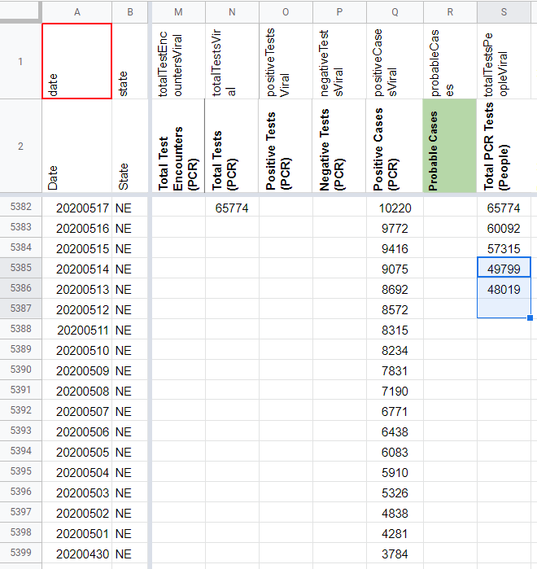
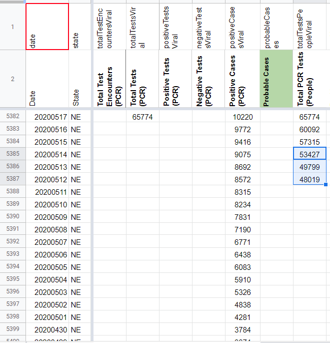
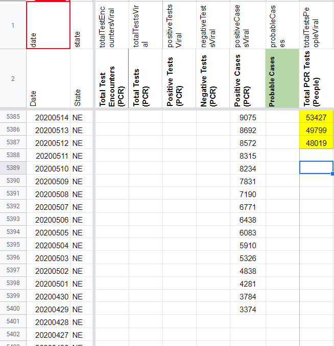
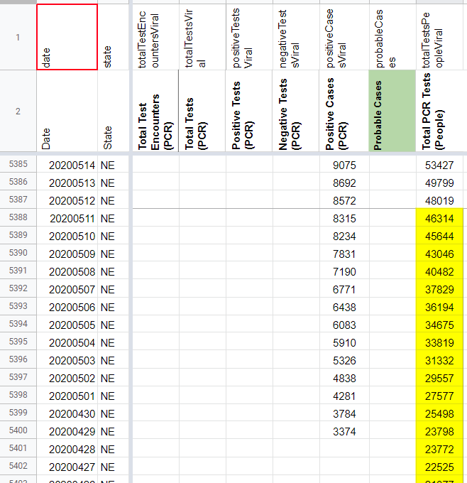

[NE] Backfill Total PCR Tests (People) to 3/27
Issue number 743
muamichali opened this issue on August 9, 2020 at 6:47 pm
Labels Historical Data not stale Backfill
State or US: NE
Describe the problem From 8/12 outreach (https://covid-tracking.slack.com/archives/C010RFJ0ZD3/p1597273411010100), we have confirmed that NE reports total test units in people. Using screenshots, we can backfill Total PCR Tests (People) through 3/27.
Link to data source State screenshots
Screenshot from 3/27 for reference: https://covid-tracking-project-data.s3.us-east-1.amazonaws.com/state_screenshots/NE/NE-20200327-161027.png
{kind=link}
Comments
BEFORE 5/12 - 5/14 CORRECTION: 
AFTER 5/12 - 5/14 CORRECTION: 
The timing of each screenshot was variable, so I went off of the values in the positive column as well, recording the corresponding total test value with the positive values we already had.
BEFORE BACKFILL:

AFTER BACKFILL:

BACKFILLED VALUES:
46314 45644 43046 40482 37829 36194 34675 33819 31332 29557 27577 25498 23798 23772 22525 21377 20112 18701 17394 16813 16478 15756 14652 13753 13173 12324 11757 11384 10991 10197 10007 9375 8852 8067 7269 6796 5933 5389 4777 4235 3693 3111 2734 2345 2006 1903
Our NE data should be as of the previous day, however, as I began backfilling, I noticed that testing values were lagged by two days.
It turns out that on 5/14, we have positive and negative values from 5/13 (correct!), but we logged the 5/12 testing value (incorrect) – it’s weird because this thread from 5/12 shows them using the correct numbers: https://covid-tracking.slack.com/archives/CUQ4MMTPD/p1589312845314300?thread_ts=1589312845.314300, but somehow, that value got shifted
I’m lumping this fix in with this issue, correcting Total PCR Test (People) from 49799 to 53427 and moving 49799 to 5/13 and 48019 to 5/12. Then, I’ll backfill through 3/27.
All values are taken from state screenshots